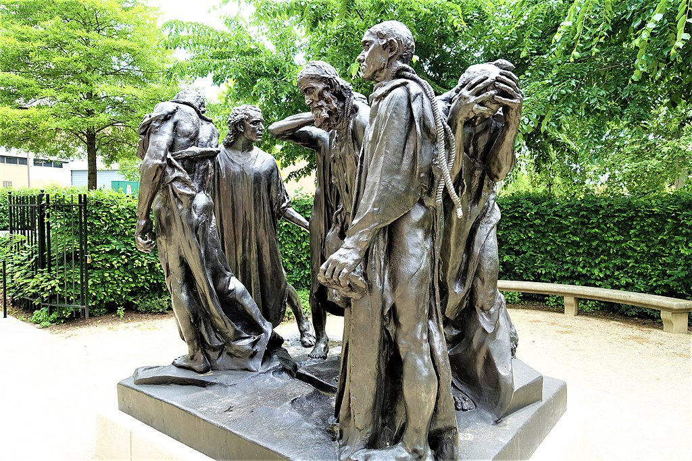

<head>
<meta charset="UTF-8" />
<meta name="keywords" content="drawing, painting" />
<meta name="description" content="drawings by Sunjy" />
<title>Sunjy</title>
<link rel="shortcut icon" type="image/x-icon" href="../../mImages/mCommon/favicon.ico" media="screen" />
<link rel="stylesheet" type="text/css" href="../../mCsses/mCommon/mCssA.css" />
<link rel="stylesheet" type="text/css" href="../../mCsses/mCommon/mCssB.css" />
<link rel="stylesheet" type="text/css" href="../../mCsses/mCommon/mCssC.css" />
<link rel="stylesheet" type="text/css" href="../../mCsses/mCommon/mCssD.css" />
<link rel="stylesheet" type="text/css" href="../../mCsses/mContent/mCssA.css" />
<link rel="stylesheet" type="text/css" href="../../mCsses/mContent/mCssB.css" />
<link rel="stylesheet" type="text/css" href="../../mCsses/mContent/mCssC.css" />
<link rel="stylesheet" type="text/css" href="../../mCsses/mContent/mCssD.css" />
</head>
<script type="text/javascript" src="../../mScripts/mContent/mContentAA.js" /></script>
<script type="text/javascript" src="../../mScripts/mContent/mContentAB.js" /></script>
<script type="text/javascript" src="../../mScripts/mContent/mContentAC.js" /></script>
<script type="text/javascript" src="../../mScripts/mContent/mContentAD.js" /></script>
<script type="text/javascript"></script> 
<script type="text/javascript">
document.write('<div class="mImgAbsolute"></div>');
/*
document.write('<p class="mFontSizeBColor" />From a white paper...</p>');
document.write('<table class="center"><tr><td>');
document.write('');
document.write('</td></tr></table>');
*/
</script>


<script type="text/javascript">
document.write('<p class="mFontSizeBColor" />The Burghers of Calais </p>');
document.write('<p class="mFontSizeSColor" />“The Burghers of Calais” by Auguste Rodin is one of his most famous sculptures. It commemorates a historical incident during the Hundred Years’ War, when Calais, a prominent French port on the English Channel, was under siege by the English for over a year and was forced to surrender.<br><br>The victors offered to spare the city if six of its leaders would surrender themselves and walk out wearing nooses around their necks, carrying the keys to the town and castle.<br><br>One of the wealthiest of the town leaders volunteered, and five other burghers volunteered to join him. It is this moment when the volunteers leave the city gates that this sculpture depicts.<br><br>Rodin captured the poignant mix of defeat, heroic self-sacrifice, and willingness to face imminent death.<br><br>The Hundred Years’ War was a series of conflicts waged from 1337 to 1453 by England against France over the succession to the French throne.<br><br>Calais overlooks the Strait of Dover, the narrowest point in the English Channel, and during this prolonged conflict, England laid siege to Calais.<br><br>King Philip VI of France ordered the city to hold out at all costs. Philip, unfortunately, failed to lift the blockade and starvation eventually forced the city to surrender.<br><br><br>Calais<br><br>Calais in northern France overlooks the Strait of Dover, the narrowest point in the English Channel, which is only 34 km (21 mi) wide. It is the closest French town to England, and the White Cliffs of Dover can easily be seen on a clear day from Calais.<br><br>Due to its position, Calais since the Middle Ages has been a significant port and a vital center for transport and trading with England.<br><br>Calais came under English control after Edward III of England captured the city in 1347, followed by a treaty in 1360 that formally assigned Calais to English rule.<br><br>Though Edward III spared the lives of the Burghers, he drove out most of the French inhabitants and settled the town with English.<br><br>Calais then grew into a thriving center for wool production and came to be called the “brightest jewel in the English crown” owing to its great importance as the gateway for the tin, lead, lace, and wool trades.<br><br>Calais remained under English control until its capture by France in 1558. The town was virtually razed to the ground during World War II when in 1940, it was a bombing target of the invading German forces who took the city during the Siege of Calais.<br><br>During World War II, the Germans built massive bunkers along the coast in preparation for launching missiles on England.<br></p>');
document.write('<table class="center" /><tr><td>');
document.write('<br>The victors offered to spare the city if six of its leaders would surrender themselves and walk out wearing nooses around their necks, carrying the keys to the town and castle.<br><br>One of the wealthiest of the town leaders volunteered, and five other burghers volunteered to join him. It is this moment when the volunteers leave the city gates that this sculpture depicts.<br><br>Rodin captured the poignant mix of defeat, heroic self-sacrifice, and willingness to face imminent death.<br><br>The Hundred Years’ War was a series of conflicts waged from 1337 to 1453 by England against France over the succession to the French throne.<br><br>Calais overlooks the Strait of Dover, the narrowest point in the English Channel, and during this prolonged conflict, England laid siege to Calais.<br><br>King Philip VI of France ordered the city to hold out at all costs. Philip, unfortunately, failed to lift the blockade and starvation eventually forced the city to surrender.<br><br><br>Calais<br><br>Calais in northern France overlooks the Strait of Dover, the narrowest point in the English Channel, which is only 34 km (21 mi) wide. It is the closest French town to England, and the White Cliffs of Dover can easily be seen on a clear day from Calais.<br><br>Due to its position, Calais since the Middle Ages has been a significant port and a vital center for transport and trading with England.<br><br>Calais came under English control after Edward III of England captured the city in 1347, followed by a treaty in 1360 that formally assigned Calais to English rule.<br><br>Though Edward III spared the lives of the Burghers, he drove out most of the French inhabitants and settled the town with English.<br><br>Calais then grew into a thriving center for wool production and came to be called the “brightest jewel in the English crown” owing to its great importance as the gateway for the tin, lead, lace, and wool trades.<br><br>Calais remained under English control until its capture by France in 1558. The town was virtually razed to the ground during World War II when in 1940, it was a bombing target of the invading German forces who took the city during the Siege of Calais.<br><br>During World War II, the Germans built massive bunkers along the coast in preparation for launching missiles on England.<br>" />');
document.write('</td></tr></table>');
</script>


